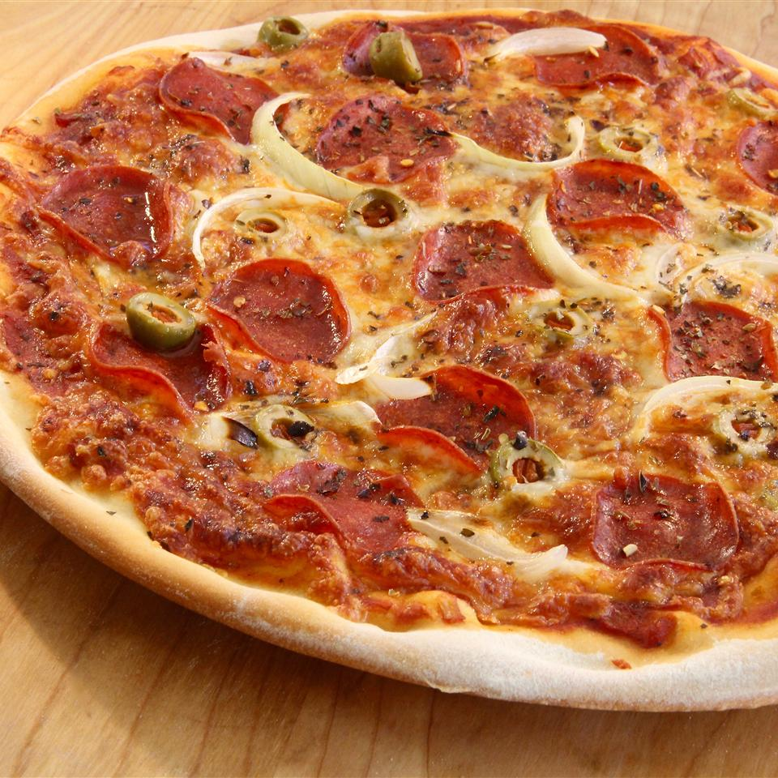

Pizza

Description
This is the recipe for a quick and easy thin-crust pizza.
Ingredients
- Dry Yeast
- White Sugar
- Lukewarm Water
- Flour
- Salt
Steps
- Dissolve yeat and sugar in hot water in a bowl. Let stand for 5-8 minutes.
- Mix 1 3/4 cup flour and salt in a large bowl. Pour in yeast mixture and mix well.
- Transfer dough to a floured surface and knead until smooth. Roll into a circle.
- Put sauce, toppings, and cheese of choice and enjoy.